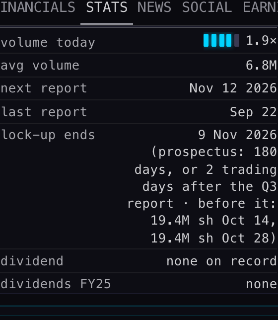
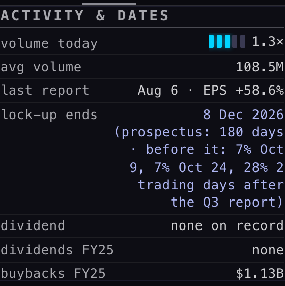
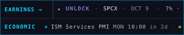
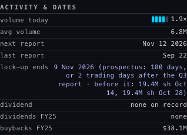

The UNLOCK watch: when the insiders' IPO shares become free to sell, read from the prospectus
R2 Part B · built 2 Oct 2026, 20:53–22:10 ET · branch hub/r2-unlock-20261002 from the live Hub (a389c7c) · one new table ipo_lockups and one new nightly job unlock-watch (deployed, run once by hand) · no schedule set, no other table touched, the Hub not deployed · pictures taken headless [MEASURED 2 Oct 2026, 21:20–21:30 ET]
00 · WHAT YOU WILL SEE
Your question on 2 Oct was "Can we get pre-IPO unlock dates from FMP, Massive or somewhere else?" Neither data company has them, so a nightly job now reads each recent IPO's prospectus (the sales document every IPO files at the SEC, free to read) and writes down when the lock-up ends. The lock-up is the promise insiders and early investors make not to sell for a set time after the IPO, usually 180 days. When it ends, a large block of shares may come to market at once.
The answer shows in two places. First, the EARNINGS → strip at the top of the dashboard gets UNLOCK entries in their own periwinkle colour for the next 90 days, in date order. Second, a company's STATS tab gets one line under ACTIVITY & DATES.
The strip held still on its UNLOCK run (1680 wide, zoomed). The heading UNLOCKS · 90 DAYS, then UNLOCK · SPCX · OCT 9 · 7% · 328.4M sh: SpaceX lets 7% of its locked shares go on 9 October. Normally the strip scrolls; it was paused only to take the picture.
Next along: SPCX · OCT 24, another 7%. Before it, CBRS · OCT 14 · 19.4M sh (Cerebras, in the first picture's run). After it, CBRS · OCT 28 · 19.4M sh.
The two main lock-up ends: UNLOCK · CBRS · NOV 9 · or 2 days after Q3 (Cerebras: 9 November, or two trading days after its Q3 report if that comes first), then SPCX · DEC 8 (the rest of SpaceX's 180-day lock-up). Hover over a chip to see the prospectus terms. Tap it to open the company.

Cerebras · STATS · ACTIVITY & DATES: lock-up ends 9 Nov 2026 (prospectus: 180 days, or 2 trading days after the Q3 report · before it: 19.4M sh Oct 14, 19.4M sh Oct 28). The row above it shows the next report, 12 Nov (estimated). That falls after 9 Nov, so on today's dates the 9 Nov end comes first.

SpaceX · STATS: lock-up ends 8 Dec 2026 (prospectus: 180 days · before it: 7% Oct 9, 7% Oct 24, 28% 2 trading days after the Q3 report). The 28% step (about 1.3 billion shares) waits on the Q3 report. That report has no date in our calendar yet, so it is named here and in the strip's hover, not given its own chip.

Phone, 390 wide: the same strip, opening on UNLOCK · SPCX · OCT 9.

Phone: the Cerebras line wraps instead of being cut off.
The walk (tools/r2u-walk.mjs, records in tools/walk-1680.json and walk-390.json) drew all six chips from the live table. It made one read of it, sent no writes and hit no page errors.
01 · WHAT THE JOB FOUND TONIGHT
It went through the stocks the Hub serves: the cohorts list (613 names) without funds, indexes, futures, rates and crypto, which leaves 455 stocks. It checked FMP's IPO calendar one month at a time for the last 18 months (2,470 IPOs in all) and each stock's stored IPO date. Three of our stocks listed in that window.
| stock | how it listed | prospectus dated | lock-up | main lock-up ends | steps before that, from the prospectus's own table |
|---|
| CBRS Cerebras | IPO, first trade 14 May 2026 | 13 May 2026 | 180 days | 9 Nov 2026, or 6:00 a.m. on the 2nd trading day after the Q3 report if earlier | 19.4M shares on 14 Oct · 19.4M on 28 Oct (earlier steps from Aug–Sep are past) |
| SPCX SpaceX | IPO, first trade 12 Jun 2026 | 11 Jun 2026 | 180 days | 8 Dec 2026, the prospectus's own words: "December 8, 2026 (180th day after the date of this prospectus)" | 7% (328.4M shares) on 9 Oct · 7% on 24 Oct · 28% (1.3 billion shares) 2 trading days after the Q3 report · a longer lock-up for some holders continues in steps until 12 Jun 2027 |
| SHAZ SharonAI | SPAC merger Dec 2025, then an underwritten Nasdaq offering on 18 Feb 2026 | 18 Feb 2026 | 90 days | ended about 19 May 2026, so nothing is shown | (see 03: a merger lock-up of about one year may still apply) |
R1's check cases (run without writing)
| stock | R1 said | the job read |
|---|
| CBRS | 10 Nov 2026, or 2 trading days after Q3 | 9 Nov 2026, or 2 trading days after Q3 (one day earlier, see below) |
| SPCX | about 9 Dec 2026; 180 days assumed, the clause not found in the first 4 MB | 8 Dec 2026, clause found at 6.1 MB of a 12 MB prospectus, plus the staged steps |
| ARM · ALAB · RDDT · CRWV | all past | all past: 11 Mar 2024 · 15 Sep 2024 · 16 Sep 2024 (Reddit's term, which R1 could not isolate, is 180 days, or 3 trading days after its Q2 2024 report) · 23 Sep 2025 |
| NBIS | a relisting, so no lock-up | Not seen as a relisting. FMP only knows Nebius's 2011 IPO (as Yandex), and its return to Nasdaq in 2024 is not on any IPO calendar. It is outside the 18-month window, so no row is written and nothing is shown, which is right for a relisting. The relisting rule itself is in place and tested. |
Why one day earlier than R1. The prospectus counts "180 days after the date of this prospectus". That date is printed on the cover ("Prospectus dated May 13, 2026"). It is the evening the shares were priced, the day before trading began. R1 counted from the first trading day. SpaceX's prospectus settles it: its table says 8 December is the 180th day after its 11 June date.
02 · HOW IT WORKS, AND WHERE EACH NUMBER COMES FROM
- The clerk (unlock-watch, a small program on our database's server) runs once a night once scheduled. It asks FMP for the IPO calendar one month at a time, because asking for a whole year silently returns only the newest month. It keeps only stocks the Hub serves.
- For each new listing it asks FMP for the company's filing list and picks the final prospectus (form 424B4). It then reads that document straight from the SEC, which is free and needs no key. It stops as soon as it has read the lock-up section: 6.0 of Cerebras's 8.5 MB, 6.3 of SpaceX's 12 MB.
- From the text it keeps: the date on the cover, the lock-up length the sentences agree on, the sentence itself, any "or earlier if…" rule, and the prospectus's own Earliest Date Available for Sale table, row by row. All of it goes into one row per stock in ipo_lockups.
- The Hub reads that small table once every six hours and writes nothing. The strip shows anything in the next 90 days. The STATS line shows a lock-up still ahead, says "no lock-up (relisting)" where that applies, and shows nothing once the lock-up is past.
- Tonight's run: 24 FMP calls, 3 SEC reads (14.4 MB), 6.8 seconds, 3 rows written.
03 · WHAT COULD BE WRONG
- SPAC holders are not covered yet. SharonAI's prospectus also says its former sponsor's shares stay locked until one year after the December 2025 merger (about December 2026), or earlier if the price holds above $12. The job does not read that kind of clause yet, so that date is missing.
- A prospectus can contradict itself. SharonAI's says 90 days in two places and 180 in another. The job took the majority. Both dates have passed.
- Steps that wait on an earnings report have no fixed date. SpaceX's biggest step (28%, about 1.3 billion shares) happens two trading days after its Q3 report. Our calendar has no date for that report yet, so the step is named in the hover and in STATS but has no chip. When a report date is stored, the chip appears marked "≈". That date counts weekdays and does not know market holidays.
- Steps that only happen if the share price passes a test (for example "if the price is 30% above the IPO price") are marked conditional and never shown as chips.
- A stock that listed under a different symbol, or came back to the market (like Nebius), is found only if FMP's IPO calendar lists it.
- Some websites quote the unlock one day later, counted from the first trading day. This job follows the prospectus's own count.
04 · WHAT WAS NOT DONE
- No schedule was set: the nightly run is the coordinator's step after review. Suggested: every weekday night at 22:30 ET, unlock-watch?mode=pass. That pass re-reads a prospectus only for a new name, or for a row older than a week.
- The Hub was not deployed. The strip and STATS line exist on this branch and were checked headless.
- The company view's EVENTS place and the ALERTS tab were not touched (they belong to tonight's other builds).
- Massive's IPO data was not used. FMP plus the SEC answered every case.
05 · DECISIONS FOR YOU
1 · Show the staged steps, or only the final date? SpaceX and Cerebras release their shares in steps (SpaceX: 328 million shares on 9 Oct, again on 24 Oct). Recommendation: keep the steps on the strip. They are the near-term news; the final date alone would hide them.
2 · Add SPAC holders' lock-ups? These are the "one year after the merger" locks, like SharonAI's founder shares around December 2026. Recommendation: yes, as the next small step. It is one more kind of sentence for the clerk to read, and the same table holds it.
3 · Run it every weekday night? Recommendation: yes. 22:30 ET catches an IPO the night it prices, and SEC reading is free.
Files: supabase/functions/unlock-watch/index.ts and lib.ts · supabase/migrations/20261002_ipo_lockups.sql (undo: …_ROLLBACK.sql, also at _archive/backend-fix-20260928/ROLLBACK-ipo_lockups-20261002.sql) · tests/r2-unlock-20261002.test.mjs (13 tests on real prospectus text, no network) · the Hub: index.html, the block "R2 · 2 OCT · UNLOCK". To turn it off: ?unlock=off or UNLOCK_ON = false.